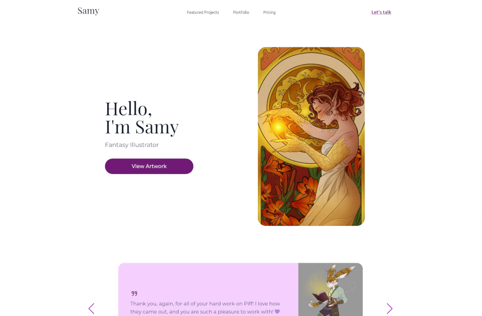

Moin, ich bin
Phillip Kollmann
Designer |
Experte für:
WordPress
Egal ob neue Webseite oder eigenes Plugin – mit PHP & JS gestalte ich leistungsstarke WordPress-Lösungen.
Web Design
Web Design ist mehr als nur hübsche Farben. Es geht darum, Nutzer intuitiv zu führen und Erlebnisse zu schaffen, die funktionieren.
UI Design
Komplexe Abläufe einfach und intuitiv bedienbar machen ist der Kern meiner Design Philosophie.
Portfolio

Illustrator Webseite
Eine Portfolio Webseite für eine lokale Illustratorin - umgesetzt in WordPress
Lebenslauf
07 / 2023 - Heute
Ausbildung:
Kaufmann für Digitalisierungsmanagement
08 / 2022 - 06 / 2023
Telefonischer Kundenberater
07 / 2020 - 09 / 2021
3D Artist
09 / 2018 - 06 / 2022